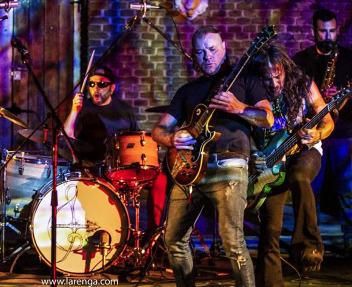

La Renga
La Renga es una banda de hard rock argentina formada en el barrio de Mataderos, Buenos Aires, en 1988. La formación está integrada por Gustavo "Chizzo" Nápoli (cantante principal, guitarra principal), Gabriel "Tete" Iglesias (bajo) y Jorge "Tanque" Iglesias (batería), quienes integran el grupo desde sus inicios, mientras que Manuel "Manu" Varela se les unió en 1994, gracias a Gabriel "Chiflo" Sánchez (saxo), miembro de la banda hasta 2008.